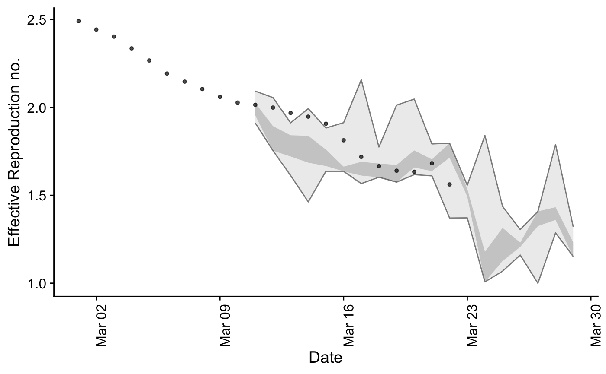
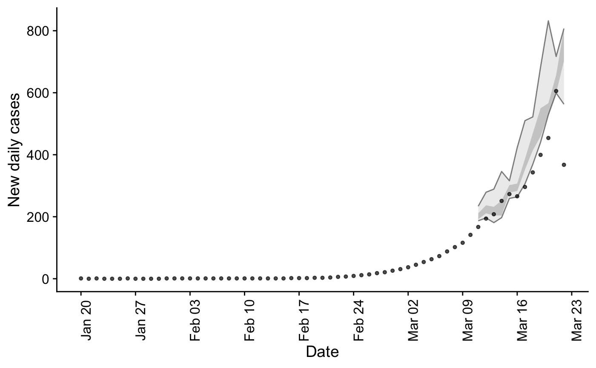

plot_forecast_evaluation.RdPlot a Forecast
plot_forecast_evaluation( forecasts = NULL, observations = NULL, horizon_to_plot = 1 )
| forecasts | A dataframe as produced by |
|---|---|
| observations | A dataframe of observations containing the following variables:
|
| horizon_to_plot | Numeric vector, the forecast horizon to plot. |
A ggplot2 object
## Evaluate a model forecast_eval <- evaluate_model(EpiSoon::example_obs_rts, EpiSoon::example_obs_cases, model = function(...) {EpiSoon::bsts_model(model = function(ss, y){bsts::AddSemilocalLinearTrend(ss, y = y)}, ...)}, serial_interval = EpiSoon::example_serial_interval, horizon = 7, samples = 10) ## Plot Rt forecast plot_forecast_evaluation(forecast_eval$forecast_rts, EpiSoon::example_obs_rts, horizon_to_plot = 7)## Plot case forecast plot_forecast_evaluation(forecast_eval$forecast_cases, EpiSoon::example_obs_cases, horizon_to_plot = 7)